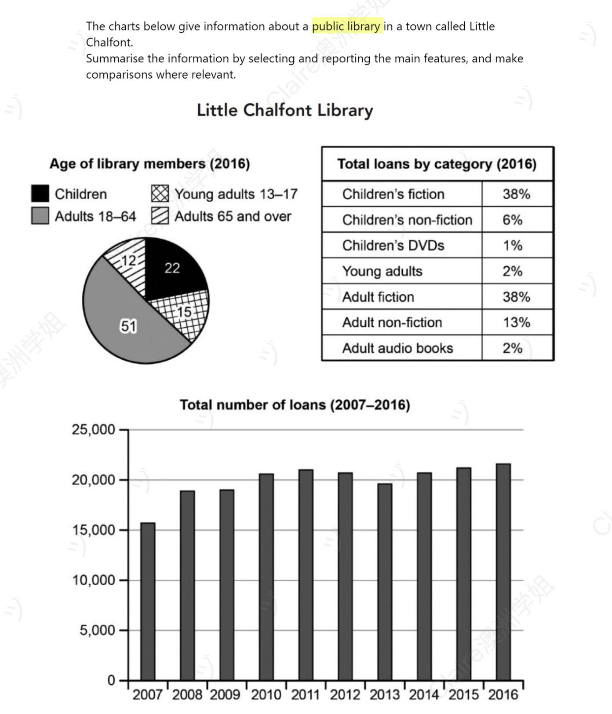

Little Chalfont Library — Members, Loans by Category & Total Loans (2007–2016)
组合类（静态 + 动态） 饼图 + 表格 + 柱状图 修改日期：2026-04-25
| 评分维度 | 修改前 | 修改后 | 变化 | 说明 |
|---|---|---|---|---|
| Task Achievement (TA) | 5.0 | 7.0 | +2.0 | 修复关键数据准确性问题（"nearly 70%" → 63% / "55%" → 53%）；柱状图动态过程精确化（起点 15,500、2008 拐点、2009-2014 波动、2016 峰值四个节点全覆盖）；三图层级数据（饼图 / 表格 / 柱状图）完整呼应。 |
| Coherence and Cohesion (CC) | 5.5 | 7.0 | +1.5 | 用 "A similar pattern was observed in..." 桥接饼图和表格段；用 "Within both categories" 进入表格内部规律；用 while / whereas / before / after which 等多层逻辑词替代单一 Besides / Meanwhile。 |
| Lexical Resource (LR) | 5.0 | 7.0 | +2.0 | 系统性替换中式英语（in all walks of people / holds 45% percentage / occupy / count → forming the largest group / made up / the least borrowed）；统一比例介词 at X%、年龄搭配 aged X to Y；引入 standing at / climbing to / fluctuated slightly 等数据描述高频词汇。 |
| Grammatical Range and Accuracy (GRA) | 4.5 | 7.5 | +3.0 | 零语法错误；时态全篇统一为过去时；修复全部主谓不一致（fiction account / DVDs has / books occupy）；修复全部介词错误（during → between / in 38% → at 38%）；引入 with + V-ing 分词、after which 关系从句、before climbing 介词短语等多种句式。 |
题目原文：The charts below give information about a public library in a town called Little Chalfont.
Summarise the information by selecting and reporting the main features, and make comparisons where relevant.

The diagrams show various data for Little Chalfont Library in terms of the number of loans between 2007 and 2016, the age of library members, and total loans by category in 2016
29 wordsOverall, it is clear that, despite noticeable fluctuations, the total number of books lent rose considerably over the ten years. Besides, we can also see that adults account for the majority of members in books borrowed.
36 wordsIn 2007, the total number of loans starts with the smallest figures, with roughly 15000 books, and then it increasing and reached approximately 22000 books in 2016, with a slightly fluctuate during 2009 to 2014.
35 wordsMoreover, lookng at he pie chart and table for 2016, nearly 70% of library members were adults, especially adults in 18 to 64, who shared 51% in all walks of people, followed by children (22%), young adults in age 13 to 17 (15%) and Adults in 65 and over (12%). Besides, the books and audio books the adults borrowed also occupy the largest proportion, accounting for 55%, compared to children's who holds 45% percentage. Meanwhile, fiction account for the biggest proportions comes from both children and adult in 38%, while children's DVDs and adult audio books has the smallest count in 1% and 2%
107 words开头段（Introduction / Paraphrase）
原因：(1) 准确点出三种图表名称（pie chart / table / bar chart），符合"首段必复述类目"的要求；(2) 用 illustrating 引导出三个并列同位语短语（age distribution / proportion of total loans / total number of loans recorded），结构对称；(3) 时间锚点完整——2016 年（饼图、表格）+ 2007-2016（柱状图）全覆盖；(4) 与本档案历史文章的 "The X graph illustrates..." 开头模板形成系列化风格。
概述段（Overview）
原因：(1) 用 In addition 替代口语化的 Besides；(2) 删除 we can also see that 主观表述；(3) 用 both...and 并列结构精确传达"会员 + 借阅"双重多数；(4) 时态修正为过去时；(5) 整体形成 Task 1 标准 Overview 第二点句式：[补充连接词] + [主语] + [核心动词过去时] + [并列同位补充]。
主体段一（Body Paragraph 1）— 总借阅量趋势（动态柱状图，2007-2016）
原因：(1) 拆为两句——第一句负责起止值（15,500 → 22,000），第二句负责过程描述（rose / fluctuated / rose again）；(2) 用 standing at 分词短语、before climbing 介词短语、after which 关系从句、before rising 介词短语形成多层句式变化，对应 GRA 7+ 要求；(3) 完整覆盖图表四个特征：起点（2007 lowest）、上升（rose steadily）、波动（fluctuated slightly between 2009-2014）、终点（peak 2016）；(4) 用 the figure 这一柱状图固化代词替代 it / the total number of loans 重复指代。
主体段二（Body Paragraph 2）— 2016 会员构成（饼图）+ 借阅类别构成（表格）
⚠️ 本段是失分重灾区——大量中式英语、数据计算错误、主谓不一致、介词错误集中出现。
原文中的具体错误：原因：(1) 修复关键数据错误（70% → 63% / 55% → 53%），TA 维度回到合规水平；(2) 系统替换中式英语（in all walks of people / holds 45% percentage / occupy / count）为地道表达；(3) 用 "A similar pattern was observed in..." 这一组合图专属高分句式建立饼图（会员构成）和表格（借阅构成）的内在呼应；(4) "Within both categories, fiction was the most popular" 一句精准抓住表格的核心规律；(5) 全段所有 "aged X to Y" 介词搭配统一，所有 "at X%" 介词统一，所有过去时统一。
内容与结构建议
修改统计
本次修改完整保留了用户"开头 + Overview + Body 1 动态柱状图 + Body 2 饼图与表格"的四段结构（这个识图思路本身是 7 分水平），所有用户原文的数据信息点全部保留——2007 起点、2016 终点、四组会员占比（51% / 22% / 15% / 12%）、借阅类别（fiction 38% / DVDs 1% / audio books 2%）等无一遗漏。修改集中在五个语言层面：(1) 修复两处关键数据计算错误（70% → 63% / 55% → 53%）；(2) 系统性替换中式英语搭配（in all walks of people / holds 45% percentage / shared X% / occupy 等）；(3) 时态全篇统一为过去时；(4) 系统修复所有年龄介词搭配（in → aged）和比例介词搭配（in → at）；(5) Body 1 动态柱状图段从一个粘连长句拆为两句，引入多层句式。
The pie chart, table and bar chart provide information about Little Chalfont Library in 2016, illustrating the age distribution of its members, the proportion of total loans by category, and the total number of loans recorded between 2007 and 2016.
40 wordsOverall, it is clear that, despite some noticeable fluctuations, the total number of books lent rose considerably over the ten-year period. In addition, adults accounted for the majority of both library members and books borrowed in 2016.
37 wordsIn 2007, the total number of loans started at its lowest point, standing at roughly 15,500, before climbing to approximately 22,000 by 2016. The figure rose steadily until 2008, after which it fluctuated slightly between 2009 and 2014, before rising again to reach its peak in the final year.
49 wordsLooking at the pie chart and table for 2016, around 63% of library members were adults, with those aged 18 to 64 forming the largest group at 51%, while adults aged 65 and over accounted for a further 12%. The remaining members were children (22%) and young adults aged 13 to 17 (15%). A similar pattern was observed in books borrowed: adult-related items made up roughly 53% of all loans, compared with 45% for children's items and only 2% for young adults. Within both categories, fiction was clearly the most popular, with children's fiction and adult fiction each accounting for 38%, whereas children's DVDs and adult audio books were the least borrowed, at just 1% and 2% respectively.
118 words